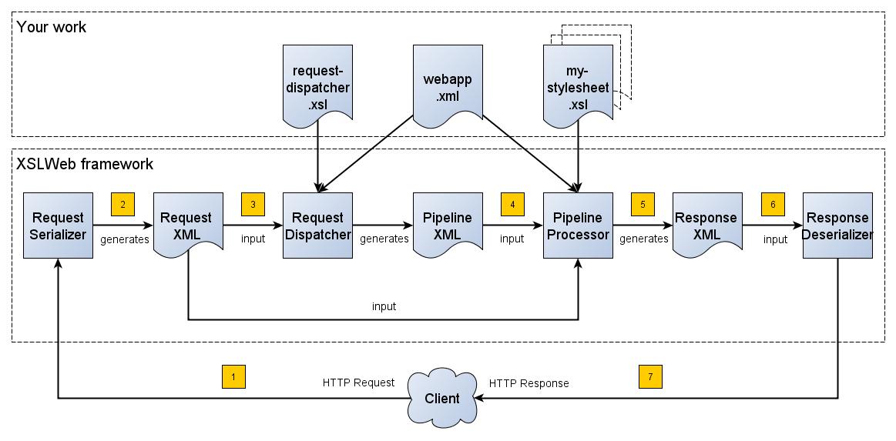

|
Armatiek BV |
|
XSLWeb Quick Start |
|
Web application framework for XSLT developers |
|
Maarten Kroon 21-1-2015
|
Table of Contents
1.1 Introduction
1.2 The Request XML
1.3 The Response XML
1.4 The Request dispatcher XSLT stylesheet
1.5 The pipeline transformation stylesheets
1.6 Web applications
1.6.1 webapp.xml
2 XPath extension function library
2.1.1 Built in extension functions
2.1.2 Response functions
2.1.3 Session functions
2.1.4 Webapp functions
2.1.5 Context functions
2.1.6 EXPath File
2.1.7 EXPath HTTP Client
2.1.8 Base64
2.1.9 Log
2.1.10 Email
2.1.11 Serialization
2.1.12 Cache
2.1.13 UUID
2.1.14 JSON
2.1.15 Script
2.1.16 SQL
2.1.17 Custom extension functions
2.1.18 Extension functions with side effects
5 Development mode and production mode
6 Logging
11 Download, install and run XSLWeb
11.1 The .zip/.tgz archive distribution
11.1.1 Download
11.1.2 Install
11.1.3 Run
11.2 The Web Application Archive (.war) distribution
11.2.1 Download
11.2.2 Install
11.2.3 Run
12 Appendix A: Request XML example
XSLWeb is an open source and free to use web development framework for XSLT developers. It is based on concepts similar to frameworks like Cocoon and Servlex, but aims to be more easily accessible and pragmatic.
Using XSLWeb, XSLT developers can develop both web applications (dynamic websites) and web services. In essence, an XSLWeb web application is a set of XSLT stylesheets that transform an XML representation of the HTTP request (the Request XML) to an XML representation of the HTTP response (the Response XML). Which specific XSLT stylesheet or pipeline of XSLT stylesheets must be executed for a particular HTTP request is governed by another XSLT stylesheet, the request dispatcher stylesheet.
During transformations, data sources can be accessed using built-in extension functions that provide HTTP communication (for example to consume REST or SOAP based web services), file and directory access, relational database access and so on. The standard functionality of XSLT/XPath 2.0 can optionally be further extended by using the script:invoke() extension function to execute Javascript code or by writing custom XPath extension functions in Java.
The configuration of an XSLWeb web application can be specified in an XML configuration document called webapp.xml. An XSLWeb server can contain multiple separate web applications.
Diagram 1 shows the flow of a HTTP request to a HTTP response within XSLWeb:

A HTTP request is sent from a client (a web browser or webservice client).
The HTTP request is serialized by the Request Serializer to a Request XML document. All information of the request is preserved in the XML.
The Request XML is the input of the Request Dispatcher, which transform the Request XML using the webapp specific XSLT stylesheet request-dispatcher.xsl. The output of this transformation is a pipeline specification, in the simplest form only specifying the path to a XSLT stylesheet that will be used to transforming the Request XML to the Response XML. This specification could also contain a pipeline of multiple XSLT transformations.
The pipeline specification is the input for the Pipeline Processor, which reads the Pipeline XML and executes the pipeline transformation steps. The input for the first transformation in the pipeline is the same Request XML as was used as input for the Request Dispatcher.
The Pipeline Processor transforms your pipeline of XSLT stylesheets. The last transformation in the pipeline must generate a Response XML document which conforms to the schema «xslweb-home»/config/xsd/xslweb/response.xsd.
The Response XML is then passed on to the Response Deserializer, which interprets your Response XML and converts it to a HTTP response, which is sent back to the client, a web browser of webservice client (7).
The Request XML is a XML representation (or XML serialization) of the HTTP Request. The Request XML conforms to the XML Schema «xslweb-home»/config/xsd/xslweb/request.xsd, and contains the following information:
The request properties: auth-type, character-encoding, content-length, context-path, content-type, local-addr, local-name, local-port, method, path, path-info, path-translated, protocol, query-string, remote-addr, remote-host, remote-port, remote-user, requested-session-id, request-URI, request-url, scheme, server-name, server-port, servlet-path, webapp-path, is-secure, is-requested-session-id-from-cookie, is-requested-session-id-from-url and is-requested-session-id-valid.
HTTP headers
Request parameters
Request body
File uploads
Session information
Cookies
See Appendix A: Request XML example for an example of a Request XML document.
The Response XML is a XML representation (or XML serialization) of the HTTP Response. The Response XML must conform to the XML Schema «xslweb-home»/config/xsd/xslweb/response.xsd, and contains the following information:
HTTP headers
Response body
Session information
Cookies
See Appendix B: Response XML example for an example of a Response XML document
The task of the XSLT stylesheet request-dispatcher.xsl is to determine which XSLT stylesheet (or pipeline of XSLT stylesheets) must be used to transform the Request XML to the Response XML. The input of the request dispatcher transformation is therefore the Request XML so it has all information available to determine which XSLT stylesheet should process the request further. The output of the request dispatcher transformation is a pipeline definition that must conform to the XML Schema «xslweb-home»/config/xsd/xslweb/pipeline.xsd.
Below is an example of a very basic request dispatcher stylesheet that generates a valid pipeline for the HTTP request http://my-domain/my-webapp/hello-world.html:
<xsl:stylesheet
xmlns:xsl="http://www.w3.org/1999/XSL/Transform"
xmlns:req="http://www.armatiek.com/xslweb/request"
xmlns:pipeline="http://www.armatiek.com/xslweb/pipeline"
version="2.0">
<xsl:template match="/req:request[req:path = '/hello-world.html']">
<pipeline:pipeline>
<pipeline:transformer
name="hello-world"
xsl-path="hello-world.xsl"
log="true"/>
</pipeline:pipeline>
</xsl:template>
</xsl:stylesheet>
The following example uses the request parameter lang in the request http://my-domain/my-webapp/hello-world.html?lang=en to determine the stylesheet:
<xsl:stylesheet
xmlns:xsl="http://www.w3.org/1999/XSL/Transform"
xmlns:req="http://www.armatiek.com/xslweb/request"
xmlns:pipeline="http://www.armatiek.com/xslweb/pipeline"
version="2.0">
<xsl:template match="/req:request[req:path = '/hello-world.html']">
<xsl:variable
name="lang"
select="req:parameters/req:parameter[@name='lang']/value[1]"/>
<pipeline:pipeline>
<pipeline:transformer name="hello-world"
xsl-path="{concat('hello-world-', $lang, '.xsl')}"/>
</pipeline:pipeline>
</xsl:template>
</xsl:stylesheet>
The exact way the output of the pipeline is serialized to XML, XHTML, HTML or text is determined by the serialization attributes of the <xsl:output/> element of the last transformation in the pipeline. Other serialization methods are supported as well, see chapter Response serialization Response serialization.
The response output can be cached by specifying extra attributes on the <pipeline:pipeline/> element, see chapter Response caching Response caching.
In development-mode, the output of the (intermediate) transformation steps can be logged to a log file, see chapters Development mode and production mode Development mode and production mode and Logging Logging.
The result of the request dispatcher stylesheet is a pipeline specification containing one or more transformation steps. The input of the first stylesheet in the pipeline is the Request XML, the output of the last stylesheet in the pipeline must conform to the Response XML schema.
XSLWeb extends the standard XSLT/XPath 2.0 functionality in a number of ways:
XSLWeb provides a number of built-in XPath extension functions that you can use to read and write files and directories, execute HTTP requests, access the Request, Response and Context, Session and WebApp objects, log messages, send e-mails and so on, see chapter XPath extension function XPath extension function.
Other pipelines can be called from within a stylesheet and the result of this nested pipeline can be used or embedded in the calling stylesheet by passing a URI that starts with the schema “xslweb://” to the standard XSLT document() function, see chapter Nested pipelines Nested pipelines.
Within every transformation a number of standard stylesheet parameters is available, see chapter Stylesheet parameters Stylesheet parameters.
An XSLWeb installation can contain multiple separate web applications. A web application can be added under the folder «xslweb-home»/webapps and has the following minimal folder structure:
my-webapp/
lib/
static/
xsl/
request-dispatcher.xsl
my-stylesheet.xsl
webapp.xml
This web application can be accessed by using the following Uri:
Error! Hyperlink reference not valid.
If you use the jar distribution of XSLWeb with default parameters, this Uri will be:
http://localhost:8080/my-webapp
Out of the box, XSLWeb contains four web applications, “documentation”, “examples”, “my-webapp” and “ROOT”. The ROOT web application is used for Uri’s that doesn’t contain a reference to a web application, for instance:
The folder my-webapp can have any name you like (provided it doesn’t contain spaces or other strange characters). The folder lib can contain any custom XPath extension functions you have developed in Java and 3rd party libraries they depend on, see section Custom extension functions Custom extension functions. The folder static contains all static files you use in your web application, like images, css stylesheets and javascripts. The folder xsl contains the XSLT stylesheet request-dispatcher.xsl and at least one pipeline XSLT stylesheet that transforms Request XML to Response XML. The file webapp.xml contains further configuration of your web application.
The file webapp.xml contains the configuration of your web application. It must conform to the XML Schema «xslweb-home»/config/xsd/xslweb/xslweb-webapp.xsd, and contains the following configuration items:
Title: The title of your web application
Description: The description of your web application
Development-mode: see chapter Development mode and production mode Development mode and production mode.
Resources: The definition of requests to static files that should not be processed by the request dispatcher (but should be served straight away) and the duration these resources should be cached by the browser (default 4 hours).
Parameters: The definition of webapp specific configuration parameters that are passed as stylesheet parameters to every XSLT transformation, see chapter Stylesheet parameters Stylesheet parameters.
Jobs: The definition of scheduled jobs, see chapter Job scheduling Job scheduling.
See Appendix C: Webapp XML example for an example of a webapp.xml configuration.
XSLWeb contains a set of readily available XPath extension functions. To use these extension functions in your XSLT stylesheets you only have to declare the namespace they are in.
Namespace: http://www.armatiek.com/xslweb/request
Functions:
add-cookie(element(response:cookie)) as xs:boolean?
add-date-header($name as xs:string, $value as xs:dateTime) as xs:boolean?
add-int-header($name as xs:string, $value as xs:integer) as xs:boolean?
add-header($name as xs:string, $value as xs:string) as xs:boolean?
encode-redirect-url($url as xs:string) as xs:string
encode-url($url as xs:string) as xs:string
is-committed() as xs:boolean
set-buffer-size($size as xs:integer) as xs:boolean?
set-status($status as xs:integer) as xs:boolean?
See example 5 how to use the response functions to set cookies.
Namespace: http://www.armatiek.com/xslweb/session
Functions:
attribute-names() as xs:string*
get-attribute($name as xs:string) as item()*
invalidate() as xs:boolean?
set-attribute($name as xs:string, attr as item()*) as xs:boolean?
set-max-active-interval($interval as xs:integer) as xs:boolean?
See example 7 how to use the session functions to set and get session attributes.
Namespace: http://www.armatiek.com/xslweb/functions/webapp
Functions:
get-attribute($name as xs:string) as item()*
get-cache-value($cache-name as xs:string,
$key-name as xs:string) as item()*
set-attribute($name as xs:string, attr as item()*) as xs:boolean?
set-cache-value($cache-name as xs:string,
$key-name as xs:string,
$attrs as item()*,
$time-to-idle as xs:integer,
$time-to-live as xs:integer) as xs:boolean?
See example 7 how to use the webapp functions to set and get webapp attributes, and example 14 how to use the caching functions.
Namespace: http://www.armatiek.com/xslweb/functions/context
Functions:
get-attribute($name as xs:string) as item()*
set-attribute($name as xs:string, attr as item()*) as xs:boolean?
See example 7 how to use the context functions to set and get session attributes.
EXPath File is a standard file system API for XPath. It defines extension functions to perform file system related operations such as listing, reading, writing, copying and moving files or directories. The API is described here.
Namespace: http://expath.org/ns/file
Functions:
exists($path as xs:string) as xs:boolean
is-dir($path as xs:string) as xs:boolean
is-file($path as xs:string) as xs:boolean
last-modified($path as xs:string) as xs:dateTime
size($file as xs:string) as xs:integer
append($file as xs:string, $items as item()*) as xs:boolean?
append($file as xs:string,
$items as item()*,
$params as element(output:serialization-parameters)) as xs:boolean?
append-binary($file as xs:string,
$value as xs:base64Binary) as xs:boolean?
append-text($file as xs:string,
$value as xs:string) as xs:boolean?
append-text($file as xs:string,
$value as xs:string,
$encoding as xs:string) as xs:boolean?
append-text-lines($file as xs:string,
$values as xs:string*) as xs:boolean?
append-text-lines($file as xs:string,
$lines as xs:string*,
$encoding as xs:string) as xs:boolean?
copy($source as xs:string, $target as xs:string) as xs:boolean?
create-dir($dir as xs:string) as xs:boolean?
create-temp-dir($prefix as xs:string, $suffix as xs:string) as xs:string
create-temp-dir($prefix as xs:string,
$suffix as xs:string,
$dir as xs:string) as xs:string
create-temp-file($prefix as xs:string, $suffix as xs:string) as xs:string
create-temp-file($prefix as xs:string,
$suffix as xs:string,
$dir as xs:string) as xs:string
delete($path as xs:string) as xs:boolean?
delete($path as xs:string, $recursive as xs:boolean) as xs:boolean?
list($dir as xs:string) as xs:string*
list($dir as xs:string, $recursive as xs:boolean) as xs:string*
list($dir as xs:string,
$recursive as xs:boolean,
$pattern as xs:string) as xs:string*
move($source as xs:string, $target as xs:string) as xs:boolean?
read-binary($file as xs:string) as xs:base64Binary
read-binary($file as xs:string, $offset as xs:integer) as xs:base64Binary
read-binary($file as xs:string,
$offset as xs:integer,
$length as xs:integer) as xs:base64Binary
read-text($file as xs:string) as xs:string
read-text($file as xs:string, $encoding as xs:string) as xs:string
read-text-lines($file as xs:string) as xs:string*
read-text-lines($file as xs:string, $encoding as xs:string) as xs:string*
write($file as xs:string, $items as item()*) as xs:boolean?
write($file as xs:string,
$items as item()*,
$params as element(output:serialization-parameters)) as xs:boolean?
write-binary($file as xs:string,
$value as xs:base64Binary) as xs:boolean?
write-binary($file as xs:string,
$value as xs:base64Binary,
$offset as xs:integer) as xs:boolean?
write-text($file as xs:string, $value as xs:string) as xs:boolean?
write-text($file as xs:string,
$value as xs:string,
$encoding as xs:string) as xs:boolean?
write-text-lines($file as xs:string,
$values as xs:string*) as xs:boolean?
write-text-lines($file as xs:string,
$values as xs:string*,
$encoding as xs:string) as xs:boolean?
name($path as xs:string) as xs:string
parent($path as xs:string) as xs:string?
path-to-native($path as xs:string) as xs:string
path-to-uri($path as xs:string) as xs:anyURI
resolve-path($path as xs:string) as xs:string
dir-separator() as xs:string
line-separator() as xs:string
path-separator() as xs:string
temp-dir() as xs:string
The structure of element(output:serialization-parameters) is described in XSLT and XQuery Serialization 3.0. See example 10 how to use some of the EXPath File functions.
EXPath HTTP Client is a standard HTTP client interface for XPath 2.0. It defines one extension function to perform HTTP requests and handle responses. The API is described here.
EXPath HTTP Client provides a lot more functionality that XSLT’s document() function:
Execution of other HTTP methods (POST, HEAD, PUT, DELETE etc), making it possible to consume both SOAP and REST based web services.
Request text or even binary documents.
Authentication (Basic and Digest).
Specify HTTP headers in the request and read the HTTP headers of the response.
Execute requests to HTML pages and parse them as well-formed XML.
Namespace: http://expath.org/ns/http-client
Functions:
send-request($request as element(http:request)) as item()+
send-request($request as element(http:request)?,
$href as xs:string?) as item()+
send-request($request as element(http:request)?,
$href as xs:string?,
$bodies as item()*) as item()+
See examples 11 and 21 how to use some of the EXPath HTTP Client function.
Namespace: http://www.armatiek.com/xslweb/functions/base64
Functions:
encode($str as xs:string) as xs:string
decode($str as xs:string) as xs:string
Namespace: http://www.armatiek.com/xslweb/functions/log
Functions:
log($level as xs:string, $message as item()*) as xs:boolean
log($level as xs:string,
$message as item()*,
$params as element(output:serialization-parameters)) as xs:boolean
Where $level is one of “ERROR”, “WARN”, “INFO” or “DEBUG”. The structure of element(output:serialization-parameters) is described in XSLT and XQuery Serialization 3.0. See example 15 how to use some of the log functions.
Namespace: http://www.armatiek.com/xslweb/functions/email
Functions:
send-email($email as element(email:email)) as xs:boolean
See example 12 how to use the send-email example and an example of the structure of element(email:email).
Namespace: http://www.armatiek.com/xslweb/functions/serialize
Functions:
serialize($nodes as node()*, $options as node()) as xs:string
See example 11 how to use some of the serialize functions.
Namespace: http://www.armatiek.com/xslweb/functions/cache
Functions:
Remove a cache entry from the response output cache:
remove($cache-key as xs:string) as xs:boolean?
Namespace: http://www.armatiek.com/xslweb/functions/uuid
Functions:
uuid() as xs:string
(Experimental)
Namespace: http://www.armatiek.com/xslweb/functions/json
Functions:
serialize-json($items as item()*) as xs:string
(Experimental)
Namespace: http://www.armatiek.com/xslweb/functions/script
Functions:
invoke($script as xs:string,
$function-name as xs:string,
$arg1 as anyAtomicType*,
$arg2 as anyAtomicType*,
$arg3 as anyAtomicType*,
$arg4 as anyAtomicType*,
$arg5 as anyAtomicType*,
$arg6 as anyAtomicType*,
$arg7 as anyAtomicType*,
$arg8 as anyAtomicType*) as anyAtomicType*
Executes a function named $function-name in the Javascript code $script. The Javascript function must have the following signature:
function function-name(context, webapp, request, response, arg1, arg2, arg3, arg4, arg5, arg6, arg7, arg8)
The first argument of the Javascipt function is the XSLWeb Context object, the second the XSLWeb WebApp object, the third the Java EE HttpServletRequest object and the fourth argument the Java EE HttpServletResponse object. The $arg* parameters of the invoke extension function must correspond to the fifth and higher arguments of the Javascript function and are all optional. The arguments are converted to Javascript arrays. Only sequences of atomic types can be used as arguments. The result of the Javascript function must be a primitive type or Javascript array containing primitive types. Within the Javascript, Java objects can be instantiated by using JavaImporter (see example 20).
The script engine used is Mozilla Rhino, see documentation.
See example 20 how to use some of the script extension function.
Namespace: http://www.armatiek.com/xslweb/functions/sql
TO BE DEVELOPED
It is also possible to write your own custom XPath extension functions in Java and add them to an XSLWeb web application. These extension functions must be integrated extension functions that use the full interface of Saxon version 9.6 (see http://www.saxonica.com/documentation9.5/extensibility/integratedfunctions/ext-full-J.html)
The compiled jar of a custom extension function together with any libraries that the function depend on can be placed in the folder «web-app»/lib. There is no need to restart the application server, XSLWeb will detect the jars and will load and register the extension function automatically.
A number of the extension functions described in previous sections perform a certain task and thereby change the state of something outside the stylesheet, like write or log to a file, send an e-mail etc. These functions don’t have any return information and should have an empty sequence as their return type. In XSLWeb, the return type of these functions is actually declared as xs:boolean? The reason is that in that case the Saxon XSLT optimizer cannot ignore these functions, because they could add something to the result tree (a boolean value). In reality, these functions never return this boolean value and always return an empty sequence. Therefore it is safe to do something like:
<xsl:sequence select="log:log('INFO', 'Hello World!') "/>
without having to worry that something is written to the result tree.
It is possible to call another pipeline from a stylesheet using the standard XSLT function document() providing an URL that starts with the scheme xslweb, for instance:
<xsl:sequence select="document('xslweb:///examples/nestedpipeline.html')"/>
where examples is the name of the webapp of the nested pipeline. The result of the nested pipeline will be available in the calling stylesheet as a document node. The nested pipeline request will follow the flow of a normal HTTP request, including the request dispatcher stylesheet. A nested pipeline call can be seen as an “internal request”, it does not go through the HTTP stack.
Every XSLT stylesheet that is executed within XSLWeb is provided with a number of stylesheet parameters:
The configuration parameters from the parameters section in the webapp.xml. The parameter’s local name can be given a namespace using the attribute uri and the type of the values can be specified using the attribute type. The value itself can be a sequence of atomic values.
config:home-dir: the path to the XSLWeb home directory (config = http://www.armatiek.com/xslweb/configuration)
config:webapp-dir: the path to the base directory of the webapp.
config:webapp-path: The path in de url to the web application (“/” for the webapp ROOT and “/” + webapp-name for other webapps).
config:development-mode: whether the webapp runs in development-mode or production-mode.
The Java HttpServletRequest, HttpServletResponse and WebApp objects. These can be used in custom XPath extension functions.
Pipeline stylesheets are also provided with any parameters that are defined within the element pipeline:transformer in request-dispatcher.xsl. The parameter’s local name can be given a namespace using the attribute uri and the type of the values can be specified using the attribute type. The value itself can be a sequence of atomic values.
The parameters only have to be declared in the stylesheets (as <xsl:param/> elements) when they are actually used. The parameters for the Java objects doesn’t have to be declared at all.
In webapp.xml a web application can be configured to run in development mode or production mode. The differences between development and production mode are:
In development mode, compiled XSLT stylesheets are not cached. That means that for every request all stylesheets in the pipeline are reread from disk and recompiled and therefore changes will be visible immediately. In production mode, stylesheets are compiled and cached the first time they are used. However, in production mode, changes in stylesheets will automatically be detected by the file alteration monitor and the complete web application will be reloaded. So there is no need to restart the application server when deploying stylesheets in production mode. The file alteration monitor will also detect and pick up changes in the webapp.xml configuration file and plugin extension function library jars.
In development mode, the caching framework (using the cache attributes on the pipeline element) is disabled, so no caching is performed.
In development mode, the output of a pipeline is not streamed directly to the client (e.g. the browser) but instead buffered until the complete transformation is finished. If an error occurs during the execution of the pipeline, the error message and stack trace are sent to the client, making it easier to debug the error. If an error occurs in production mode, only a HTTP status code 500 (internal server error) is sent to the client (that is, if the response is not already committed by the application server).
In development mode a pipeline step can be configured to log its (intermediate) output to the log file «xslweb-home»/logs/pipeline.log, by specifying log=”true” on the pipeline step. In production mode all logging of the output of pipeline steps is disabled.
Log files are stored in the directory «xslweb-home»/logs. This directory contains two log files, xslweb.log and pipeline.log.
Regular XSLWeb specific log messages are logged to xslweb.log. It’s also possible to write to this log file from web application stylesheets using the XPath extension function log:log(), see paragraph Log.
In development mode a pipeline step can be configured to log its (intermediate) output to the log file pipeline.log, by specifying log=”true” on the pipeline step.
By default the log files are rotated when they reach the size of 10Mb, and a maximum of 8 backups is retained.
The way the result of the transformation pipeline is serialized to XML, XHTML, HTML or text can be specified by the serialization attributes of the element xsl:output in the last XSLT stylesheet of the pipeline, using the attributes method, encoding, indent, omit-xml-declaration and so on.
In case the output of the pipeline should not be XML, XHTML, HTML or text, a serializer element can be added at the end of the pipeline. XSLWeb currently provides one extra serializer for producing JSON (see example 18).
The output of a pipeline can be cached by providing optional caching attributes on the element pipeline:pipeline in the stylesheet request-dispatcher.xsl. The purpose of caching the response output is to gain performance; a response that can be served from cache will be returned quicker because no transformations are necessary and also the load on the server is decreased.
The following attributes are supported:
cache (xs:boolean): specifies whether the output of the response must be cache. Default: false.
cache-key (xs:string): specifies the key under which the output of the pipeline must be cached, default the concatenation of req:method, req:request-URI and req:query-string. It is only necessary to override the default mechanism if for instance the query string contains parameters that are different for every request, like with tracking software.
cache-time-to-live (xs:integer): The number of seconds the output will be cached from the time it was first added to the cache. Default: 60 seconds.
cache-time-to-idle: (xs:integer): The number of seconds the output will be cached from the last time it was actually used. Default”: 60 seconds.
cache-scope (xs:string): One of “webapp” or “user”. It specifies whether the output should be cached and reused by all users of the web application (“webapp”), or for a specific user (“user”). Default “webapp”.
cache-headers (xs:boolean): Specifies whether XSLWeb should automatically provide the HTTP response cache headers: ETag, Last-Modified and Expires. It supports conditional GET. Because browsers and other HTTP clients have the expiry information returned in the response headers, they do not even need to request the page again. Even once the local browser copy has expired, the browser will do a conditional GET. Default: false.
XSLWeb uses the standard caching framework Ehcache to support its caching (see http://ehcache.org). More advanced configuration properties can be specified in the Ehcache specific configuration file «xslweb-home»/config/xslweb-ehcache.xml, like for instance how many responses should be cached in memory and how many on disk. See the ehcache documentation for further details.
N.B. Response caching is only enabled in production mode, chapter Development mode and production mode Development mode and production mode.
When you want to execute a pipeline (repeatedly) on a certain moment without user interaction, you can use the job scheduling feature of XSLWeb. The jobs can be defined and scheduled in the webapp.xml configuration file, for example:
<job>
<name>MyJob</name>
<uri>job/my-job</uri>
<!-- Execute at 10:15am on the 15th day of every month: -->
<cron>0 15 10 15 * ?</cron>
<concurrent>false</concurrent>
</job>
The elements have the following meaning:
name: the name of the scheduled job. Used in log files.
uri: the Uri of the request to a pipeline within the current webapp. This internal request will follow the same flow of a normal HTTP request, including the request dispatcher stylesheet. The Uri does not contain the name of the webapp.
cron: the cron expression which is a string comprising five or six fields separated by white space that represents a set of times to execute the job (see http://en.wikipedia.org/wiki/Cron#CRON_expression).
concurrent: specifies whether or not the job can run concurrently with other jobs.
You can implement (BASIC) user authentication by performing the following steps:
Include the stylesheet «xslweb-home»/xsl/system/authentication/basic/basic-authentication.xsl in your request-dispatcher.xsl stylesheet.
Implement the function auth:must-authenticate($request as element(request:request))): xs:boolean. In this function you can determine whether $request must be authenticated or not.
Implement the function auth:get-realm(): xs:string. This function must return the authentication realm.
Implement the function auth:login($username as xs:string, $password as xs:string): element()?. This function must authenticate $username with $password and return an empty sequence if the authentication failed or an element() containing the user profile if authentication succeeded. This element must have the name authentication and a subelement ID. The element data can be filled with arbitrary data you will need in subsequent requests.
This element will be stored by XSLWeb in the user's session object under the name xslweb-userprofile so it will be available in subsequent requests.
N.B. DIGEST or other authentication methods are not yet supported. BASIC (and DIGEST) authentication is only secure if HTTPS is used!
XSLWeb 1.0 can be downloaded in two distributions:
As a .zip (Windows) or .tgz (Linux/OSX) archive, containing a single executable java library (.jar) with embedded application server (Tomcat 7).
As a web application archive (.war)
This distribution contains the XSLWeb home directory and a single executable java library (.jar) with embedded application server (Tomcat 7). This distribution is the easiest to install and run and is most suitable to try out and develop applications in XSLWeb.
You can download the archives from the following locations:
http://www.armatiek.nl/xslweb/xslweb-1.0.0-jar.zip (Windows) or
http://www.armatiek.nl/xslweb/xslweb-1.0.0-jar.tgz (Linux/OSX).
Extract the archive to a directory of your choice. You will need the Java Runtime Environment (JRE) version 1.7 or higher. At a command line, check your Java version like this:
$ java -version
java version "1.7.0_55"
Java(TM) SE Runtime Environment (build 1.7.0_55-b13)
Java HotSpot(TM) 64-Bit Server VM (build 24.55-b03, mixed mode)
The output will vary, but you need to make sure you have version 1.7 or higher. If you don't have the required version, or if the java command is not found, download and install the latest version from Oracle at http://www.oracle.com/technetwork/java/javase/downloads/index.html.
Go in a command/shell prompt to the directory and run the batch file run-xslweb.bat (Windows) or the shell script run-xslweb.sh (Linux/OSX). Open a web browser and go to the address:
A web page with the text “It works!” should appear. From here you can go to the examples and the documentation.
The batch file and shell script support the following command line arguments:
-ajpPort <ajpPort> ajp port to use
-clientAuth enable client authentication for
https
-D <arg> key=value
-extractDirectory <extractDirectory> path to extract war content,
default value: .extract
-h,--help help
-httpPort <httpPort> http port to use
-httpProtocol <httpProtocol> http protocol to use: HTTP/1.1 or
org.apache.coyote.http11.Http11Nio
Protocol
-httpsPort <httpsPort> https port to use
-maxPostSize <maxPostSize> max post size in bytes to use
-keyAlias <keyAlias> alias from keystore for ssl
-loggerName <loggerName> logger to use: slf4j to use slf4j
bridge on top of jul
-obfuscate <password> obfuscate the password and exit
-resetExtract clean previous extract directory
-serverXmlPath <serverXmlPath> server.xml to use, optional
-X,--debug debug
This distribution contains the XSLWeb home directory and a web application archive (.war) and is most suitable to run XSLWeb in a production setting. The web application archive is a standard J2EE web application that can be installed on any Java application server that supports Servlet Spec 3.0 (Tomcat 7+, TomEE 1.6+, WebLogic, Jetty 8+, Glassfish 3+, JBoss AS 6.x/7.x etc.).
You can download the archives from the following locations:
http://www.armatiek.nl/xslweb/xslweb-1.0.0-war.zip (Windows) or
http://www.armatiek.nl/xslweb/xslweb-1.0.0-war.tgz (Linux/OSX).
Extract the archive to a directory of your choice. This directory will contain a directory called home and a file called xslweb.war. The installation of a war is application server specific, so please consult the manual of your server for that. XSLWeb does need one extra configuration and that is the location of the XSLWeb home directory by setting a Java System Property called xslweb.home.
Start your application server. Open a web browser and go to the address:
http://localhost:<port>/xslweb
where port is the port your application server runs on. A web page with the text “It works!” should appear. From here you can go to the examples and the documentation.
<?xml version="1.0" encoding="UTF-8"?>
<request xmlns="http://www.armatiek.com/xslweb/request">
<character-encoding>UTF-8</character-encoding>
<content-length>-1</content-length>
<context-path>/xslweb</context-path>
<local-addr>127.0.0.1</local-addr>
<local-name>127.0.0.1</local-name>
<local-port>8080</local-port>
<method>GET</method>
<path>/log/log.html</path>
<path-info>/examples/log/log.html</path-info>
<path-translated>D:\webapps\xslweb\examples\log\log.html</path-translated>
<protocol>HTTP/1.1</protocol>
<remote-addr>127.0.0.1</remote-addr>
<remote-host>127.0.0.1</remote-host>
<remote-port>55451</remote-port>
<requested-session-id>D5984A4C38D09BE74C04F1D89022AE90</requested-session-id>
<request-URI>/xslweb/examples/log/log.html</request-URI>
<request-url>http://localhost:8080/xslweb/examples/log/log.html</request-url>
<scheme>http</scheme>
<server-name>localhost</server-name>
<server-port>8080</server-port>
<servlet-path/>
<webapp-path>/examples</webapp-path>
<is-secure>false</is-secure>
<is-requested-session-id-from-cookie>true</is-requested-session-id-from-cookie>
<is-requested-session-id-from-url>false</is-requested-session-id-from-url>
<is-requested-session-id-valid>true</is-requested-session-id-valid>
<headers>
<header name="host">localhost:8080</header>
<header name="connection">keep-alive</header>
<header name="accept">text/html,application/xhtml+xml,application/xml;q=0.9,image/webp,*/*;q=0.8</header>
<header name="user-agent">Mozilla/5.0 (Windows NT 6.1; WOW64) AppleWebKit/537.36 (KHTML, like Gecko) Chrome/39.0.2171.95 Safari/537.36</header>
<header name="referer">http://localhost:8080/xslweb/examples</header>
<header name="accept-encoding">gzip, deflate, sdch</header>
<header name="accept-language">nl-NL,nl;q=0.8,en-US;q=0.6,en;q=0.4</header>
<header name="cookie">JSESSIONID=D5984A4C38D09BE74C04F1D89022AE90</header>
</headers>
<parameters>
<parameter name="country">
<value>US</value>
</parameter>
<parameter name="states">
<value>AZ</value>
<value>CA</value>
</parameter>
</parameters>
<!-- If this request was a file upload POST request:
<file-uploads>
<file-upload>
<file-path>C:\Users\John\AppData\Local\Temp\48226ce5-7bba-4986-8d1f-c4a8f34638cf\MyDocument1.docx</file-path>
<field-name>file1</field-name>
<file-name>MyDocument1.docx</file-name>
<content-type>application/vnd.openxmlformats-officedocument.wordprocessingml.document</content-type>
<size>177032</size>
</file-upload>
</file-uploads>
-->
<session>
<creation-time>2015-01-06T13:06:04.925+01:00</creation-time>
<id>D5984A4C38D09BE74C04F1D89022AE90</id>
<last-accessed-time>2015-01-06T14:36:04.909+01:00</last-accessed-time>
<max-inactive-interval>1800</max-inactive-interval>
<is-new>false</is-new>
</session>
<cookies>
<cookie>
<max-age>-1</max-age>
<name>JSESSIONID</name>
<is-secure>false</is-secure>
<value>D5984A4C38D09BE74C04F1D89022AE90</value>
<version>0</version>
</cookie>
</cookies>
</request>
<?xml version="1.0" encoding="UTF-8"?>
<resp:response
xmlns:resp="http://www.armatiek.com/xslweb/response"
status="200">
<resp:headers>
<resp:header name="Pragma">no-cache</resp:header>
<resp:int-header name="Expires">0</resp:int-header>
<resp:date-header
name="Last-Modified">2006-04-10T13:40:23.83-05:00</resp:date-header>
</resp:headers>
<resp:session max-active-interval="1800">
<resp:attributes>
<resp:attribute name="msg">
<item type="xs:string">Hello World</item>
<item type="node()">
<msg>Hello World!</msg>
</item>
</resp:attribute>
</resp:attributes>
</resp:session>
<resp:cookies>
<resp:cookie>
<resp:comment>Comment 1</resp:comment>
<resp:domain>localhost.com</resp:domain>
<resp:max-age>-1</resp:max-age>
<resp:name>cookie-1</resp:name>
<resp:path>/examples</resp:path>
<resp:is-secure>false</resp:is-secure>
<resp:value>cookie-1-value</resp:value>
<resp:version>0</resp:version>
</resp:cookie>
</resp:cookies>
<resp:body>
<html xmlns="http://www.w3.org/1999/xhtml">
<head>
<title>Hello World!</title>
</head>
<body>
<h1>Hello World</h1>
</body>
</html>
</resp:body>
</resp:response>
<?xml version="1.0" encoding="UTF-8"?>
<webapp
xmlns="http://www.armatiek.com/xslweb/webapp"
xmlns:xs="http://www.w3.org/2001/XMLSchema"
xmlns:xsi="http://www.w3.org/2001/XMLSchema-instance"
xsi:schemaLocation="http://www.armatiek.com/xslweb/webapp
../../config/xsd/xslweb/webapp.xsd">
<title>XSLWeb examples</title>
<description>XSLWeb examples</description>
<development-mode>true</development-mode>
<!-- Resources to serve straight away: -->
<resources>
<resource pattern="/favicon.ico" media-type="image/x-icon"/>
<resource
pattern="/(styles|images)/.+\.png"
media-type="image/png"
duration="P7DT0H0M0S"/>
<resource pattern="/(styles|images)/.+\.gif" media-type="image/gif"/>
<resource pattern="/(styles|images)/.+\.(jpg|jpeg)" media-type="image/jpg"/>
<resource pattern="/scripts/.+\.js" media-type="text/javascript"/>
<resource pattern="/styles/.+\.css" media-type="text/css"/>
<resource pattern="/downloads/.+\.docx?" media-type="application/msword"/>
</resources>
<!-- Stylesheet parameters: -->
<parameters>
<parameter
name="hostname"
uri="http://www.armatiek.com/xslweb/functions/email"
type="xs:string">
<value>smtp.googlemail.com</value>
</parameter>
<parameter
name="port"
uri="http://www.armatiek.com/xslweb/functions/email"
type="xs:integer">
<value>465</value>
</parameter>
<parameter
name="username"
uri="http://www.armatiek.com/xslweb/functions/email"
type="xs:string">
<value>MYUSERNAME</value>
</parameter>
<parameter
name="password"
uri="http://www.armatiek.com/xslweb/functions/email"
type="xs:string">
<value>MYPASSWORD</value>
</parameter>
<parameter
name="use-ssl"
uri="http://www.armatiek.com/xslweb/functions/email"
type="xs:boolean">
<value>true</value>
</parameter>
</parameters>
<!-- Scheduled job definitions: -->
<jobs>
<job>
<name>WriteTimeJob</name>
<uri>execute-writetime-job.html</uri>
<!-- Execute every 60 seconds: -->
<cron>0/60 * * * * ?</cron>
<concurrent>true</concurrent>
</job>
</jobs>
</webapp>